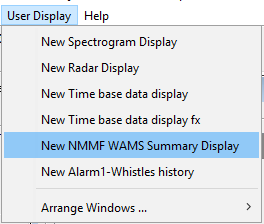

WAMS displays can be added to any User Display tab by first clicking on the tab, then selecting User Display > New NMMF WAMS Summary Display.
There are 3 elements to the display: the Summary of Detections table, the Mean Detections table, and the Chart.
The Summary of Detections table will show the counts for the current day, as well as the previous 5 days (if the data is available in the database).
The time periods are shown in the header row. Note that, in order to remain consistent with the time-keeping throughout PAMGuard, all times are based on a UTC time zone (i.e. PAMGuard Time). Therefore the counts shown in the display tables may not match the local computer time period. This must be kept in mind for post-processing and analysis.
Note also that the current time period is not updated in real time, but only when the end of the period has passed or PAMGuard processing is stopped.
The Mean Detections information can be found in this table. This data is loaded from the csv file or, if not available, calculated from tables in the database.
The time periods are shown in the header row. Note that, in order to remain consistent with the time-keeping throughout PAMGuard, all times are based on a UTC time zone (i.e. PAMGuard Time). Therefore the counts shown in the display tables may not match the local computer time period. This must be kept in mind for post-processing and analysis.
Note also that the current time period is not updated in real time, but only when the end of the period has passed or PAMGuard processing is stopped.
The chart display two time series: the counts from the past 24 hours (shown in blue), as well as the mean counts (shown in orange with a dashed line). The chart is updated whenever the table is updated.
Previous: WAMS module Configuration